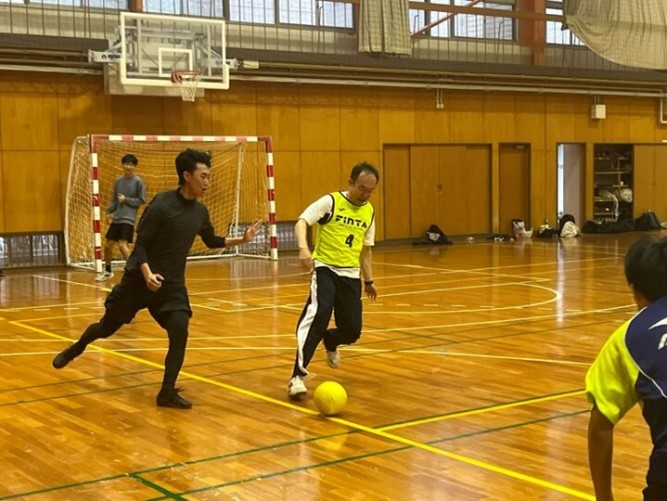
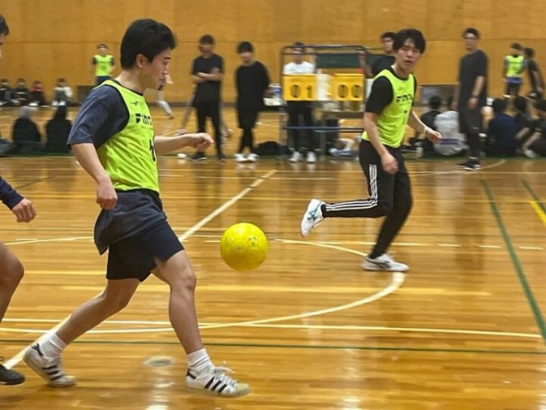
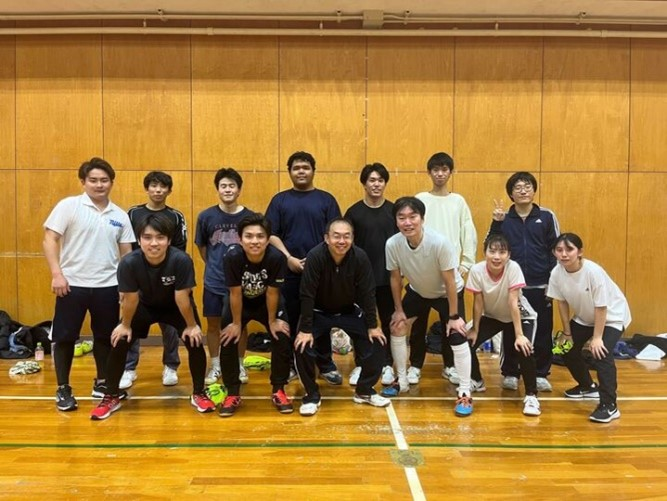

mizukan
イベント
研究室対抗フットサル大会 (岡村杯) 開催！！
11月17日（日），本学体育館にて「学部対抗フットサル大会 (岡村杯)」が開催されました．
この大会は，研究室同士の交流を深めることを目的として毎年行われており，
今年も多くの学生が参加しました．
大会には合計8チームがエントリーし，白熱した試合が繰り広げられました．
各チームが持てる力を存分に発揮し，観客席からは大きな声援が送られました．
特に，昨年の覇者である地盤研究室チームと都市計Bチームの試合は観客を大いに沸かせ,
都市計Bチームが勝利を収めました．



水工学研究室チームからは森脇教授も選手として参加し，巧みな攻防戦を繰り広げました．
惜しくも予選敗退となってしまいましたが，学生生活の思い出の１ページとなるような熱い試合をすることができました！
文責 前田